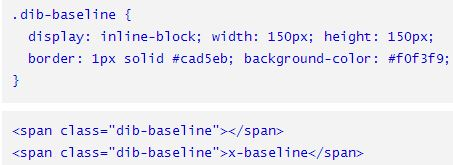
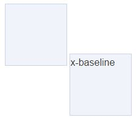
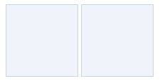
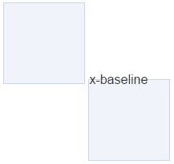
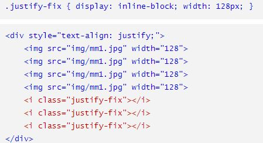

石婉茹
我的名字：石婉茹
QQ:2829339528
wechat:ww28052
敢问路在何方&&路在脚下
95后/本科在读/轻生活/轻梦想
石婉茹
我的名字：石婉茹
QQ:2829339528
wechat:ww28052
敢问路在何方&&路在脚下
95后/本科在读/轻生活/轻梦想
vertical-align 属性设置元素的垂直对齐方式。该属性定义行内元素的基线相对于该元素所在行的基线的垂直对齐。允许指定负长度值和百分比值。这会使元素降低而不是升高。在表单元格中，这个属性会设置单元格框中的单元格内容的对齐方式。
文本通常根据不可见的基线进行对齐的，而字母的底部位于基线之上。
baseline（默认，元素放置父元素的基线
middle（把此元素放置在父元素的中部）
sub（垂直对齐文本的下标）
super（垂直对齐文本的上标）
text-top（把元素的顶端与父元素字体的顶端对齐）
text-bottom（把元素的底端与父元素字体的底端对齐）
top（把元素的顶端与行中最高元素的顶端对齐）
bottom（把元素的顶端与行中最低元素的顶端对齐）
vertical-align:10em;
vertical-align:4px;
verticlal-align:10%;
vertical-align的百分比值不是相对于字体大小或者其他什么属性计算的，而是相对于line-height计算的
inherit
initial
unset
vertical-align默认值是baseline, 也就是基线对齐。简单的图片下面留白行为表现，本质上，就是vertical-align和line-height作用的结果
让vertical-align失效。vertical-align对块状水平的元素无感。因此，只要让图片display水平为block就可以了，可以直接设置display或者浮动、绝对定位等（如果布局允许）。
使用其他vertical-align值。告别baseline, 取用其他属性值，比如bottom/middle/top都是可以的。
直接修改line-height值。下面的空隙高度，实际上是文字计算后的行高值和字母x下边缘的距离。
line-height为相对单位，font-size间接控制。font-size设为0, 本质上还是改变line-height值.
可以进一步衍生，实现其他更实用的效果，比如任意尺寸的图片（或者内联块状化的多行文字）的垂直居中效果。就是借助属性，vertical-align和line-height。
div { line-height: 240px; } img { vertical-align: middle; }
效果并不是完全的垂直居中，只是近似。middle中线位置(字符x的中心)并不是字符内容的绝对居中位置，两个位置的偏差就是图片近似居中的偏差。
div { line-height: 240px; font-size: 0; } img { vertical-align: middle; }
font-size:0, 因此此时content area高度是0，各种线都在高度为0的这条线上，绝对中心线和中线重合，自然全垂直居中
inline-block的基线是正常流中最后一个line box的基线, 除非，这个line box里面既没有line boxes或者本身overflow属性的计算值而不是visible, 这种情况下基线是margin底边缘。
即就是一个inline-block元素，如果里面没有inline内联元素，或者overflow不是visible，则该元素的基线就是其margin底边缘，否则，其基线就是元素里面最后一行内联元素的基线。


第一个框框里面没有内联元素，因此，基线就是容器的margin下边缘，也就是下边框下面的位置；而第二个框框里面有字符，纯正的内联元素，因此，第二个框框就是这些字符的基线，也就是字母x的下边缘了

如果没有文字，则基线对齐，两个盒子并齐

字符实际占据的高度是由行高决定的，当行高变成0的时候，字符占据的高度也是0，此时，高度的起始位置就变成了字符content area的垂直中心位置，于是，文字就一半落在外面了

背景色&&line-height:0解决垂直间隙问题
改造占位元素的基线，在元素中随便放几个字符
改造“幽灵空白节点”的基线位置，使用font-size，字体为0时，基线和中线会重合在一起（line-height如果是相对值，line-height:0也可以省掉）
使用其他vertical-align对齐方式，就是让两端对齐的列表元素vertical-align:top/bottom/...之类
该属性定义行内元素的基线相对于该元素所在行的基线的垂直对齐。
在表单元格中，这个属性会设置单元格框中的单元格td内容的对齐方式。
vertical-align属性是不适用于块元素的，这就是为什么有时使用vertical-align属性无效的原因。
可以使用display属性，设置其值为table-cell，将块元素转化为单元格，然后再使用vertical-align属性。